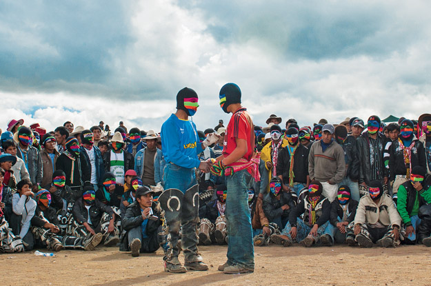

Origen
La tradición comenzó en la época de la colonización del Perú, cuando los españoles hacían pelear a los esclavos nativos en Navidad como una forma de burlarse de ellos, durante ese período, la festividad estaba ligada al consumo de alcohol y, en algunos casos, a las mujeres esclavas.
Después de la independencia del Perú, el evento se fusionó con el ritual Inca llamado Huaylía, que consistía en bailes y cantos de resistencia indígena. Como la población del Perú no se siente representada por las tradiciones navideñas, el evento continúa hoy y está vinculado al honor y la paz personal.
